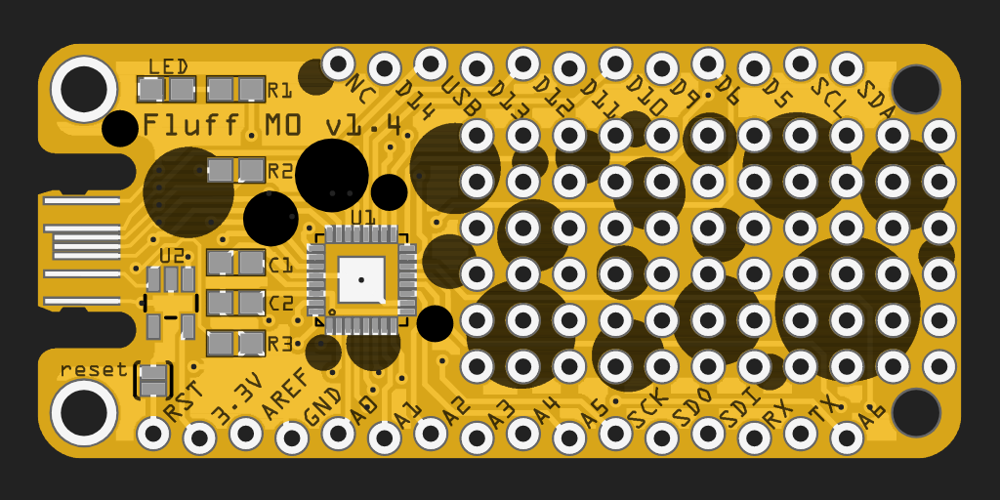
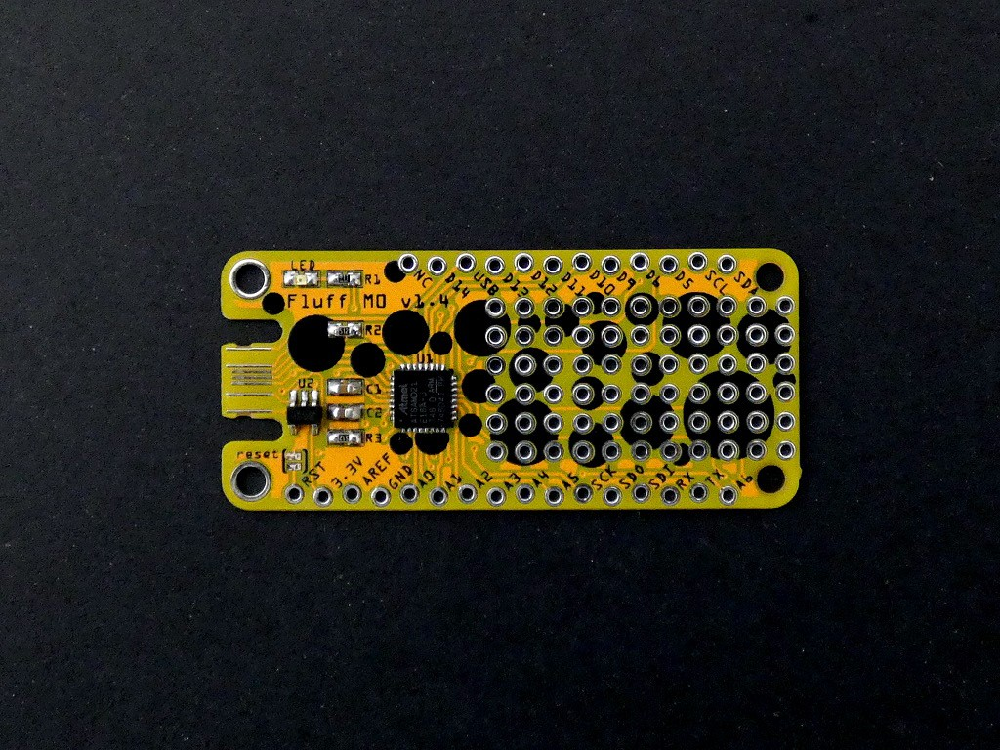
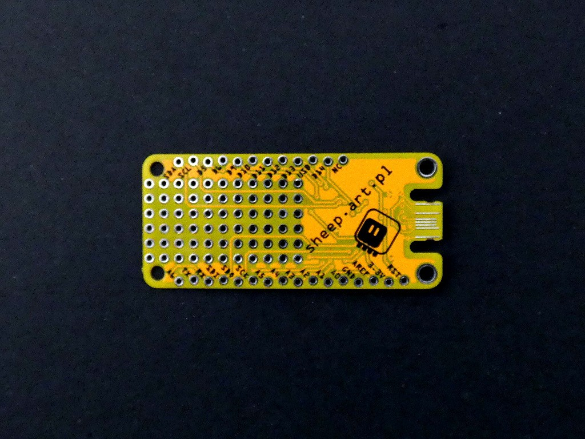

Version 1.4¶
Published on 2020-07-09 in Fluff M0.
After the fail with missing pulld-downs on CC pins for USB-C, I re- designed the board a little bit:
There are now contacts and pull-downs for the CC pins, and I also added a large prototyping area in the empty part of the board. The holes are now just on the silkscreen. This time the boards arrived in a few days:
I put the address of my website on the other side, so that I can use the very flat board as a kind of business card:
That’s pretty much it. The new version works perfectly fine both with USB 2.0 and actual USB-C ports. I’m publishing the fritzing design file, the gerbers and the BOM, so that anyone can make their own — you can find them in the downloads section of this page.